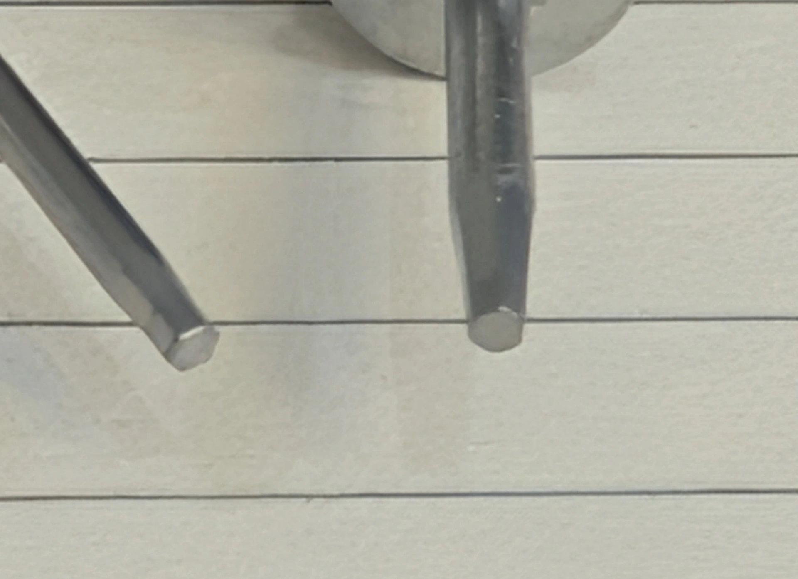

Insight 48 — همهی سیستمهای کرهای یک سایز نیستند
تاریخ انتشار:
آخرین بازبینی:
English

توضیح بالینی
سیستمهای کرهای یک خانوادهی همسایز نیستند؛ گلِ پیچشان دو گروهِ ۱.۲ و ۱.۲۵ میلیمتری است و همین اختلافِ ریز کافی است که آچار روی پیچِ سالم هم لق بزند و با گشتاوردادن، پیچِ سالم را واقعاً هرز کند
-
شرح مسئله
اینکه آچارِ دو برندِ متفاوت روی هم سوار نمیشود را همه میدانند. حرفِ اصلی جای دیگری است. بیشترِ ما ناخودآگاه سیستمهای کرهای را یک خانواده فرض میکنیم و خیال میکنیم آچار و پیچشان بینِ خودشان جابهجا میشود. همین فرض است که غافلگیرت میکند، چون این سیستمها در سایزِ گلِ پیچ، یعنی همان محلی که نوکِ آچار باید تویش بنشیند، با هم فرق دارند و اختلافشان آنقدر ریز است که نه دیده میشود نه انتظارش را داری.
موقع کار هم ساده خودش را نشان میدهد: میروی پیچ اباتمنت یا پروتز را باز یا بسته کنی، آچار درست نمیگیرد. یا لق میزند، یا تا ته نمیرود، یا حس میکنی سرِ پیچ گرد شده. اولین حدس این است که پیچ هرز شده، در حالی که خیلی وقتها پیچ سالم است و فقط آچار و پیچ مالِ دو سیستم با گلِ پیچِ متفاوتاند. -
چیزی که میدانیم و آنچه در ایران رایج است
«کرهای» یک استانداردِ واحد نیست. سایزِ گلِ پیچ دو دسته میشود: گروه ۱.۲ میلیمتر (مگاژن و اوستم) و گروه ۱.۲۵ میلیمتر (دنتیس، دنتیوم، MIS). کلِ اختلاف ۰.۰۵ میلیمتر است، به چشم نمیآید ولی برای نشستنِ درستِ آچار همینقدر کافی است که کار را خراب کند.
داخلِ هر گروه آچارها روی هم مینشینند؛ دردسر وقتی شروع میشود که از یک گروه به گروه دیگر بپری. در ایران این زیاد پیش میآید، چون اوستم و مگاژن (۱.۲) و دنتیس (۱.۲۵) هر سه پرکاربردند و کارِ اباتمنت کاستوم هم رایج است. توی این کارها پیچی که با اباتمنت میآید لزوماً همسیستمِ آچارِ کیتِ تو نیست. و سایزِ گلِ پیچ را خودِ پیچ تعیین میکند، نه بدنهی اباتمنت. -
علت بروز مشکل
اگر آچار از گلِ پیچ کوچکتر باشد (مگاژنِ ۱.۲ روی دنتیسِ ۱.۲۵) لق میزند و کامل درگیر نمیشود؛ اگر بزرگتر باشد (دنتیسِ ۱.۲۵ روی مگاژنِ ۱.۲) تا ته جا نمیرود.
نکتهی مهم اینجاست: روی یک درگیریِ ناقص که گشتاور بدهی، نیرو گوشههای گلِ پیچ را گرد میکند. یعنی همان لحظه که فکر میکنی پیچ هرز شده، اگر زور بیشتری بیاوری یا آچار عوض کنی، همان فشار پیچ را واقعاً هرز میکند. تشخیصِ غلط، خودش علتِ خرابی میشود.
تشخیصش هم ساده است: ناهماهنگیِ سایز از همان اولین تماس روی پیچِ نو پیداست، ولی هرز شدنِ واقعی بهمرور میآید. پس روی یک پیچِ آکبند اگر آچار نگرفت، اول به سایز شک کن نه به پیچ. -
نکته کلیدی — راه حل:
دو گروهِ سایز را بشناس و آچار را با سیستمِ پیچ ست کن، نه با اباتمنت یا کیتی که دمِ دستت است.
توی کارِ کاستوم منشأ پیچ را پیدا کن، چون سایزِ گلِ پیچ را پیچ تعیین میکند نه جایی که اباتمنت از آن تراشیده شده.
روی پیچِ نو اگر آچار لق زد یا ته ننشست، قبل از زورِ بیشتر احتمالِ اختلافِ سایز را چک کن.
هر دو سایزِ ۱.۲ و ۱.۲۵ را جدا و دمِ دست نگه دار که اشتباه برداشته نشوند.
محتوای این صفحه برای استفادهٔ آموزشی دندانپزشکان و دانشجویان دندانپزشکی تهیه شده است.